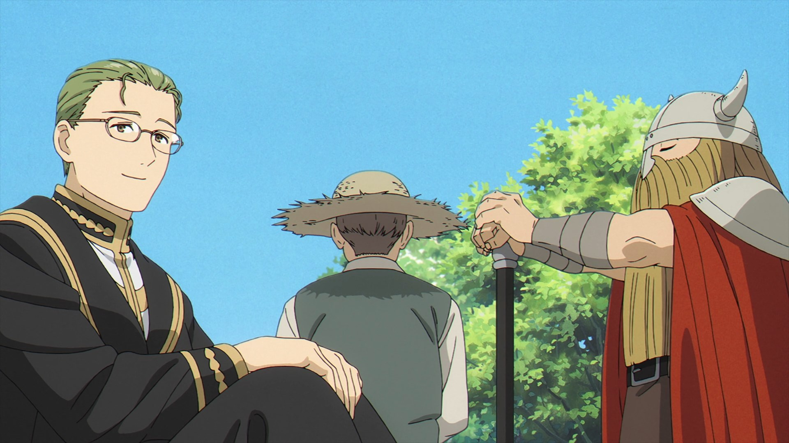
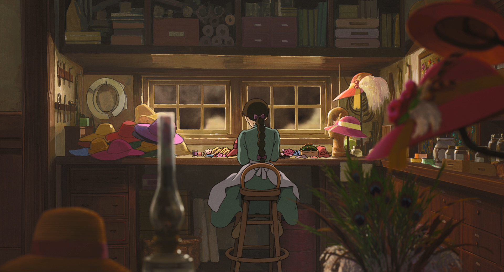
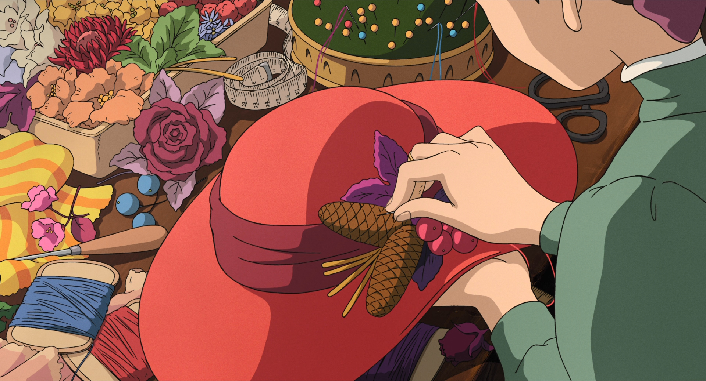

Провожающая в последний путь Фрирен
Описание
Одержав победу над Королём демонов, отряд героя Химмеля вернулся домой. Волшебница-эльф Фрирен
и её отважные товарищи принесли людям мир и разошлись в разные стороны, чтобы спокойно прожить остаток жизни.
Однако не всех членов отряда ждёт одинаковая участь. Для эльфов время течёт иначе, поэтому Фрирен вынужденно
становится свидетелем того, как её спутники один за другим постепенно уходят из жизни. Сможет ли она смириться
со смертью друзей и понять, что значит жизнь для окружающих её людей? Фрирен начинает новое путешествие,
чтобы найти ответ.
Кадры



Информация
| Год |
2023-2024 |
| Страна |
Япония |
| Автор |
Канэхито Ямада |
Ходячий замок
Описание
Восемнадцатилетняя шляпница Софи ведёт тихую и ничем не примечательную городскую жизнь. Однако типичный её распорядок рушится,
когда в окрестностях города объявляется Ходячий замок Хаула — колдуна, заключившего сделку с демоном огня. Вечером после работы
очаровательный голубоглазый красавец спасает Софи от приставаний двух солдат. Однако итогом их встречи становится проклятие,
превратившее Софи в девяностолетнюю старуху.
Кадры



Информация
| Год |
2004 |
| Страна |
Япония |
| Автор |
Хаяо Миядзаки |
Ведьмина служба доставки
Описание
Кики — тринадцатилетняя девочка, живущая в деревне вместе с матерью-ведьмой. У ведьм есть традиция:
по достижении 13 лет ведьма должна улететь в город и прожить там один год. В начале истории Кики покидает дом и отправляется
в путь с говорливым чёрным котом. Кики прилетает в Корико, красивый город на берегу моря, и открывает службу доставки.
Кадры
Информация
| Год |
1989 |
| Страна |
Япония |
| Автор |
Хаяо Миядзаки |